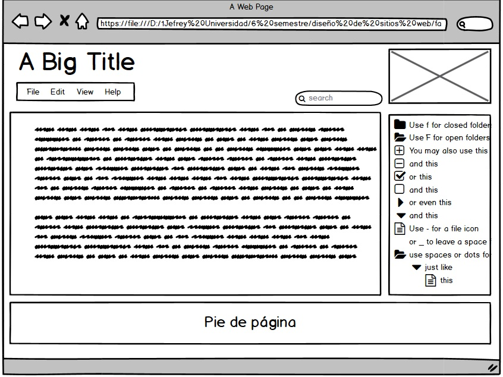

Etiquetas comunes
- Comentarios: <!--comentarios--> para escribir anotaciones que sirven para ayudar a la compresión del código. Lo que se escribe dentro de esta etiqueta es ignorado por el navegador y no se muestra en la página.
- <b>…</b >: aplica negrita al texto incluido entre las etiquetas (es equivalente a usar <strong>….</strong>.
- <i>…</i>: aplica cursiva al texto incluido entre las etiquetas (es equivalente a usar <em>…</em>.
- <u>…</u>: aplica subrayado.
- <font>…</font>: Delimita un texto con un formato de fuente determinado definido por sus propiedades. La etiqueta <font> puede incluir los 3 parámetros (tamaño, fuente y color)
- h1, h2, h3, h4, h5, h6: indican 6 niveles de formato de encabezados em los que <h1>…</h1> delimitaría el tipo de fuente de mayor tamaño

Mockups
Referencia: los datos fueron obtenidos de las siguientes fuentes.
Celaya Luna, A. (2014). Creación de páginas web: HTML5. p. 1 - 60. https://elibro-net.bibliotecavirtual.unad.edu.co/es/ereader/unad/56045
Etiquetas HTML. Qué son y cómo se usan. (s. f.). [Imagen]. websgalicia.es. https://websgalicia.es/blog/wp-content/uploads/etiquetas-html-800x560.jpg
N. (2020, 9 agosto). Cómo mostrar etiquetas HTML como texto. Noelia Espinosa. http://www.noeliaespinosa.com/mostrar-codigo-html-sin-que-se-ejecute/